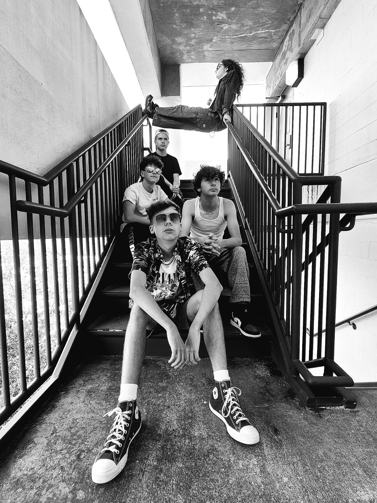

About The Brones
The Brones was formed in September of 2024. They perform and write in Louisiana and Arizona. They are an Alternative and Metal band containing music writer and lead singer Caleb Gavlas, with other guitarists and singers Layne Olivier, David Gavlas, Evan G, and band manager Trae.
The Brones members are all good friends looking to make an entry into the world of music. Each enjoy making, writing, and playing music and want to share their love with the world. Taking unlikely things into a meaningful metaphor, they work hard to create music together and hope you enjoy.
Meet the Band
Caleb Gavlas
Lead vocals, guitar, and principal writer. Caleb brings lyrical depth and a powerful vocal presence to the heart of The Brones.
Dutch G.
Guitar and more. Dutch blends technical skill with stage charisma, adding a dynamic edge to the band's performances.
David Gavlas
Guitarist with energy and finesse, David lays down the rhythms that ground the band's heavy sound.
Layne Olivier
Guitarist and creative powerhouse, Layne delivers sharp riffs and harmony that elevate The Brones' signature style.
Trae
Band Manager. The glue behind the scenes, Trae keeps the group moving forward and focused on the music.